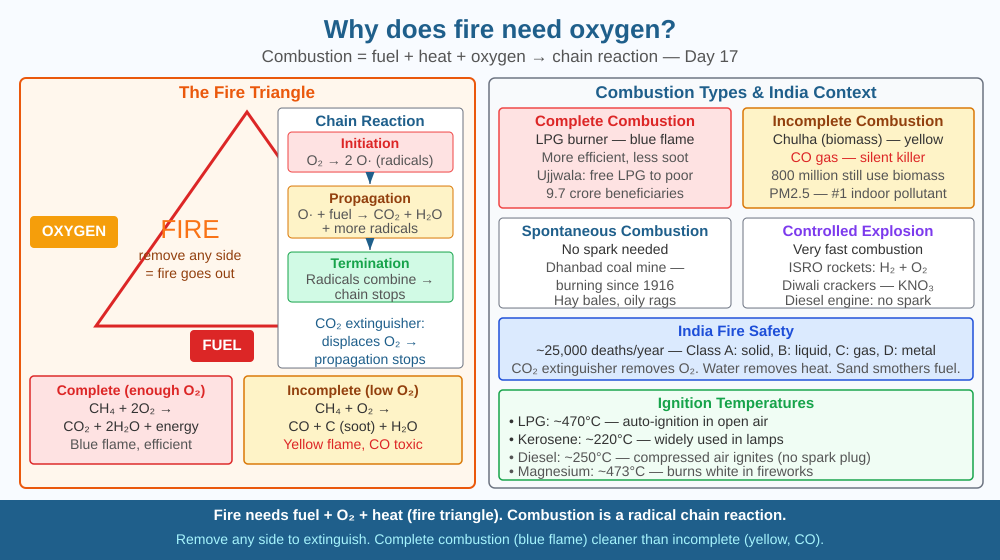

Discover what combustion actually is at the molecular level — and understand why the fire triangle explains every firefighting technique used in India.
Blow on a campfire and it burns brighter. Cover a candle with a glass — it goes out in seconds. Astronauts on the International Space Station cannot have open flames — even small ones. Forest fires in India spread along the direction of the wind. In all these cases, oxygen is controlling fire. But why? What is oxygen actually doing? And if you understand the mechanism, can you predict exactly how to start or stop any fire?
Combustion defined:
Combustion is a rapid chemical reaction between a fuel and an oxidiser (usually oxygen) that releases heat and light. At the molecular level, it is the breaking of C-H and C-C bonds in fuel molecules and the forming of C=O (in CO₂) and O-H (in H₂O) bonds — releasing energy.
The Fire Triangle:
Three elements are required simultaneously for fire: 1. Fuel (the carbon-hydrogen compound that burns: wood, petrol, LPG) 2. Heat (activation energy — to start bond-breaking) 3. Oxygen (the oxidiser — accepts electrons, forms bonds with carbon and hydrogen)
Remove any one side → fire is impossible or extinguishes.
What oxygen actually does at the molecular level:
During combustion, oxygen molecules (O₂) react with hot fuel fragments: - CH₄ + 2O₂ → CO₂ + 2H₂O (methane combustion) - C + O₂ → CO₂ (complete combustion) - When oxygen is limited: 2C + O₂ → 2CO (incomplete combustion → carbon monoxide, toxic)
The heat produced keeps fuel molecules at their ignition temperature — sustaining the reaction. Remove oxygen and the chain reaction of molecule-by-molecule combustion stops.
Extinguishing methods based on the triangle:
Ignition temperature:
Every fuel has a minimum temperature at which it ignites. Below this temperature, combustion cannot sustain itself even with plenty of oxygen: - Paper: ~230°C - Wood: ~250–300°C - Petrol vapour: ~246°C - Natural gas (methane): ~537°C
Think of combustion as a team sport between three players: the fuel (player 1), oxygen (player 2), and heat (the referee that keeps the game going). Player 1 and Player 2 need to meet (collide) with enough energy (provided by the referee) to react. If you remove Player 2 (oxygen) — no reaction. If you cool down the referee (remove heat) — players don't collide hard enough. If you remove Player 1 (fuel) — nothing to react. A fire extinguisher wins by benching one of the players. Understanding which player to remove tells you exactly which type of extinguisher to use for each fire class.

The diagram shows a central fire triangle with three sides labelled: FUEL, HEAT, OXYGEN. At each corner, a method of fire suppression crosses out that side: sand/CO₂ extinguisher crosses out OXYGEN, water crosses out HEAT, removing fuel source crosses out FUEL. Three fire types are shown: a wood/paper fire (Class A), a petrol fire (Class B), an electrical fire (Class C) — with appropriate extinguishers. A molecular inset shows CH₄ + O₂ → CO₂ + H₂O with bonds drawn; an "incomplete combustion" branch shows CO forming when O₂ is limited.
Light a candle. Cover it with a small glass (upside down over the candle). Count the seconds until it goes out. Now try a larger glass — how much longer does it stay lit? The candle consumes oxygen inside the glass and goes out when O₂ concentration drops too low to sustain combustion (~16% — normal air is 21%). Larger glass = more oxygen = longer burn. Predict how long a given-size glass will sustain the flame using your data, then test the prediction. This is quantitative fire science.
Wildfire behaviour is one of the most complex phenomena in applied chemistry and fluid dynamics. Fire creates its own wind (convection) that brings fresh oxygen and pushes flames forward. A large fire can create a "fire whirl" — a vortex of spinning flames that can throw burning embers kilometres ahead of the fire front. The 2018 Camp Fire in California, one of the deadliest in US history, spread at 80 football fields per minute. India's climate-driven increases in forest fire frequency (tracked by ISRO's Forest Survey of India) are directly linked to temperature increase removing the "heat" barrier — drier fuels ignite at lower energy input. How does understanding the fire triangle quantitatively help predict fire spread rates?
Why is oxygen essential for fire to burn?
Why is understanding combustion mechanism more useful than knowing fire needs oxygen?
If all oxygen were removed from around a burning candle, what would you predict?
The combustion of ethanol (found in sanitiser — common during COVID): C₂H₅OH + 3O₂ → 2CO₂ + 3H₂O. (a) Identify how many C-H, C-C, C-O, and O-H bonds are broken, and how many C=O (CO₂) and O-H (water) bonds are formed. (b) Ethanol has a heat of combustion of 1,366 kJ/mol. A 50 mL bottle of sanitiser (assume pure ethanol, density 0.79 g/mL, molar mass 46 g/mol) contains how many moles of ethanol? (c) How much heat energy does the complete combustion of this bottle release? (d) Compare to the energy in a standard LPG cylinder (12 kg propane, heat of combustion 2,220 kJ/mol, molar mass 44 g/mol).
Fire did not always exist on Earth. The first evidence of widespread fire in the fossil record appears about 420 million years ago — when plant life (and therefore fuel) first became abundant enough for fires to spread. But even before that, oxygen concentration had to be high enough. During the Carboniferous period (~300 million years ago), oxygen levels reached 35% (vs today's 21%) — and fires burned so intensely that forests of giant ferns charred across entire continents. The coal deposits we burn today in India's power plants are the compressed, partially combusted remains of those ancient forests — fire's own products, stored for 300 million years.
Combustion requires fuel + oxygen + heat (the fire triangle). Oxygen reacts with fuel at the molecular level, forming CO₂ and H₂O and releasing energy. Remove any triangle side → fire stops. Incomplete combustion (limited O₂) produces toxic CO.